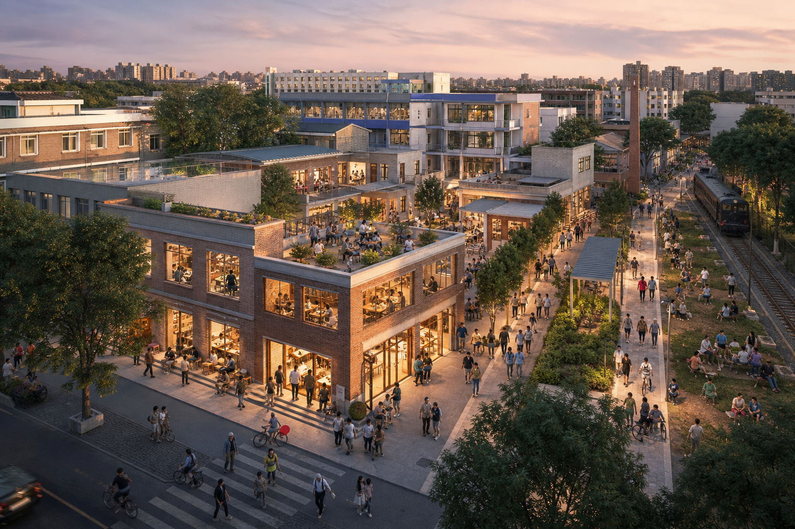
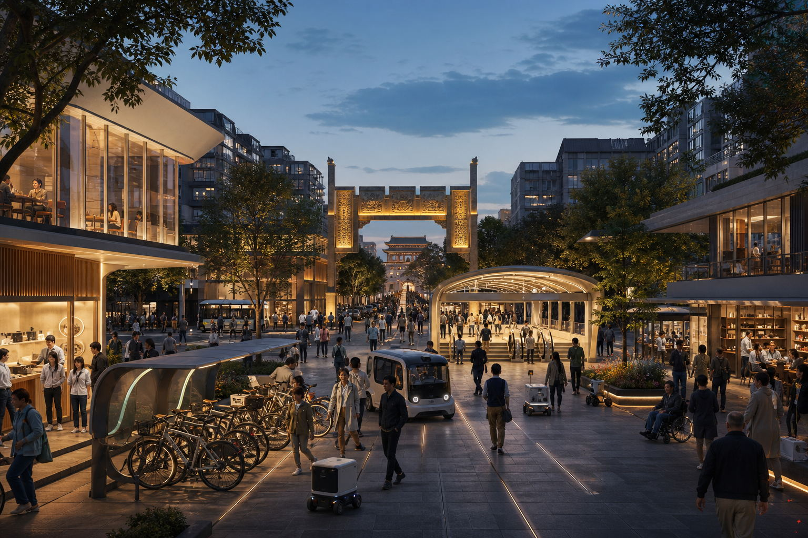
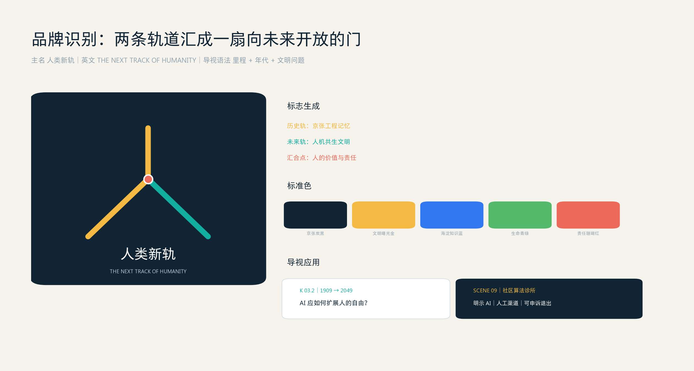
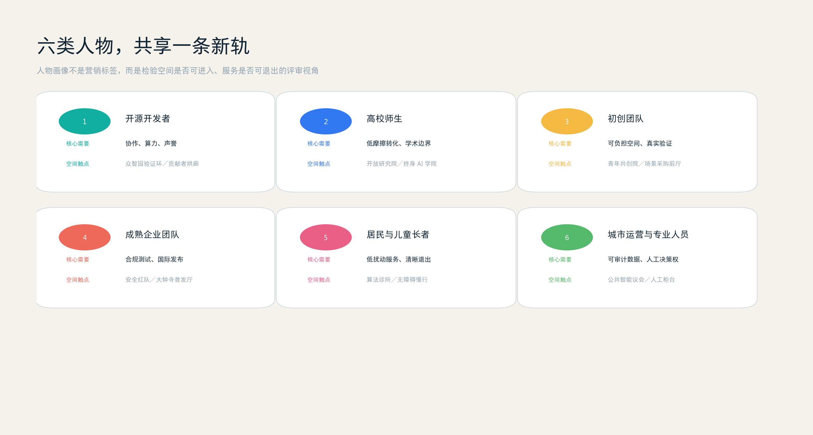
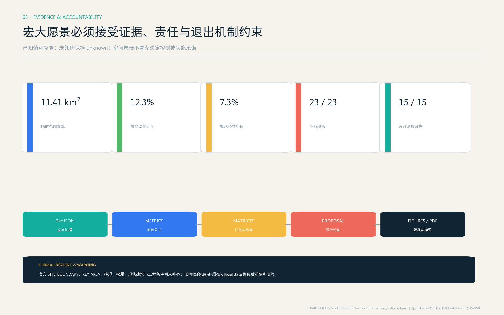

01 · CIVILIZATION FRAMEWORK
五条文明新轨
人类新轨不是一条技术路线，而是海淀为人工智能设定的城市价值方向。
02 · MASTER STRUCTURE
一轴、三原型、两翼、五地标、十四场景
京张遗址公园成为可行走的文明跃迁轴，从铁路文明、工程文明和中关村知识文明，通向人机共生文明。

03 · THREE PROTOTYPES
三个重点区，回答三个面向人类未来的问题

众智园 · 新智能诞生地
人类应创造什么样的 AI？自主智能验证环、机器人共工街、可信治理厅与地球共生花园共同构成开放但分级安全的验证园。

AI 原点 · 新能力生长地
人与 AI 如何共同学习和创造？终身 AI 学院、开放研究院、青年共创院与社区算法诊所共同面向京张文明轴。

大钟寺 · 新生活未来之门
AI 如何负责任地进入日常？未来出行、专业服务导航、产品首发与人工兜底共享连续公共首层。
04 · IDENTITY & PEOPLE
从城市品牌到六类人物，检验一条新轨是否真正属于所有人
两条轨道汇成面向未来开放的门；六类人物则把宏大命题变成可进入、可使用、可退出的日常判断。


05 · CIVIC SYSTEM
让技术、公共生活与城市生态同步流动
南北文明轴、三条东西缝合和蓝绿体验环共同连接轨道门户、社区、高校与园区；人的界面始终位于公共智能基础设施的最上层。

06 · 14 URBAN PROTOTYPES
每个场景都必须回答六个问题
谁受益、在哪里、用什么数据、谁复核、如何退出、谁维护。
全栈自主智能验证
专家签字 · 开放复盘城市智能体安全红队
数据隔离 · 高风险人工复核机器人与人共工街
地理围栏 · 安全员停机权自适应无障碍慢行
自愿参与 · 模糊轨迹公共 AI 城市账户
用途可见 · 人工柜台并行人人终身 AI 学院
教师负责 · 不作商业画像开放研究与贡献者拱廊
同意公开 · 可申诉更正青年低成本试验空间
分级授权 · 法务审查社区算法诊所
不收原始隐私 · 提供非 AI 渠道医疗教育法律导航
只做导航初筛 · 专业人士决定自主交通与无人配送
人工接管 · 事件强制上报京张未来文明导览
公开史料 · 馆员校核城市碳水学习廊
聚合环境数据 · 人工核验全球智能文明大会
城市原型交换 · 公开评估07 · EVIDENCE
宏大愿景必须接受证据与责任约束

08 · REVIEW NAVIGATION
规划证据与评审导航
总览、重点区、责任卡和指标均可在网页中快速浏览；下列入口直接打开机器可核验的来源、假设、指标与自检文件。
REVIEW INDEX
九项设计内容，一页快速定位
总览地图与三层范围见总体结构；重点区域见众智园、北京 AI 原点社区与大钟寺三张控制卡；用地分区、交通慢行、蓝绿公共空间、建筑与更新项目见 A3/A0 图册；AI 场景见十四张六问责任卡。
HAIDIAN'S INVITATION TO THE WORLD
让我们主动铺设一条
值得人类共同选择的新轨道
不是等待人工智能决定人类的未来，而是在百年京张上，用城市空间、公共制度与真实生活共同创造未来。